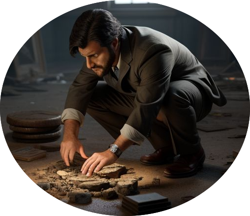

Chris Neale PhD Project
We have published several papers under the Zero Trust Forensics project. You can find details of these below.
In this paper, we outline a framework for reasoning about artefact tampering based on the S-TLA formalism.
View on ScienceDirectIn this paper, we conduct a systematic review of existing techniques for authenticating digital artefacts to identify tampering.
View on ScienceDirectIn this paper, we introduce the concept of Zero Trust in the context of Digital Forensics, identifying several areas of potential future research.
View on ScienceDirect